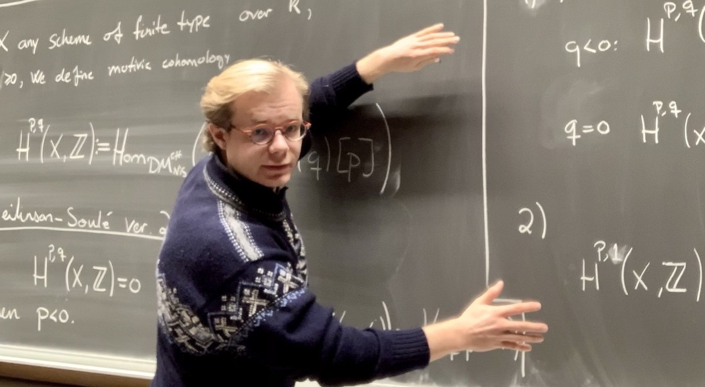

Nikolai Opdan's Home Page
Contact:
Email: ntmarti-at-math.uio.noOffice: NHA B1104
The Geometry and Topology group at UiO.
The Equations in Motivic Hopotopy research project at UiO. 
Research
Publications
- Introduction to Framed Correspondences , Motivic Geometry. Vol. 6. No. 1. The Open Book Series. MSP Books and Monographs. 2025. 107–126. Joint with Marc Hoyois .
- Lectures on the Cohomology of Reciprocity Sheaves , Motivic Geometry. Vol. 6. No. 1. The Open Book Series. MSP Books and Monographs. 2025. 127–163. Joint with Kay Rülling .
In preperation
- Modules and slices in logarithmic motivic homotopy theory.
- The logarithmic h- and v-topologies. Joint with Doosung Park and Paul Arne Østvær.
- Log motivic functors.
- Enriched excisive functors and stable homotopy categories. Joint with Hadrian Heine, Giuseppe Leoncini and Paul Arne Østvær.
Misc
- Logarithmic motives with compact support. Master thesis (2021).
-
Attacking SIKE .
A Survey of known attacks against the proposed post-crypto protocol SIKE (2021).
Update: SIKE is insecure after a successful (classical) attack was published in July 2022.
Short CV
- Doctoral Research Fellow in Mathematics, Geometry and Topology, University of Oslo, March 2022-June 2025
- Research assistant, University of Oslo, December 2021-February 2022.
- NSM Summer internship, Post-Quantum cryptography, June-August 2021.
- MSc. in Mathematics, Algebraic geometry and algebraic topology, University of Oslo, 2020-2021.
- BSc. in Mathematics, Informatics and Technology, University of Oslo, 2017-2020.
Events
Past events:- IWoAT 2024 summer school on motivic homotopy theory, Shanghai, 23–27 June 2024.
- Motivic homotopy in interaction, CIRM Marseilles, 4-8 November 2024.
- Oslo Stability and Enumerative Geometry Workshop 2023, Oslo, 11-15 December 2023.
- Motives in Mainz, Mainz, 18-22 March 2024.
- Oka Theory and Complex Geometry Conference, Sophus Lie center, 19-23 June 2023.
- Research visit, University of Milan, 7-15 May 2023.
- Cartan Geometry and Related Topics, Geilo, 5-9 March 2023.
- Northern Lights Deep Learning Conference 2023, Tromsø, 9-13 January 2023.
- Arithmetic Algebraic Geometry conference, Darmstadt, 3-7 October 2022.
- Organizer of Motivic Geometry Conference, University of Oslo, 8-12 August 2022.
- Harnessing Motivic Invariants, Essen, 27 June - 1 July 2022.
- Research visit, University of Milan, April-May 2022.
- Arithmetic and geometry of varieties with trivial canocical bundle, Oslo, 12-14 December 2021.
- Motivic Summer School and Conference on The Six-Functor Formalism and Motivic Homotopy Theory, University of Milan, September 20-24 2021.
- Motivic Geometry project., Center for Advanced Studies, Oslo, Spring semester 2021.